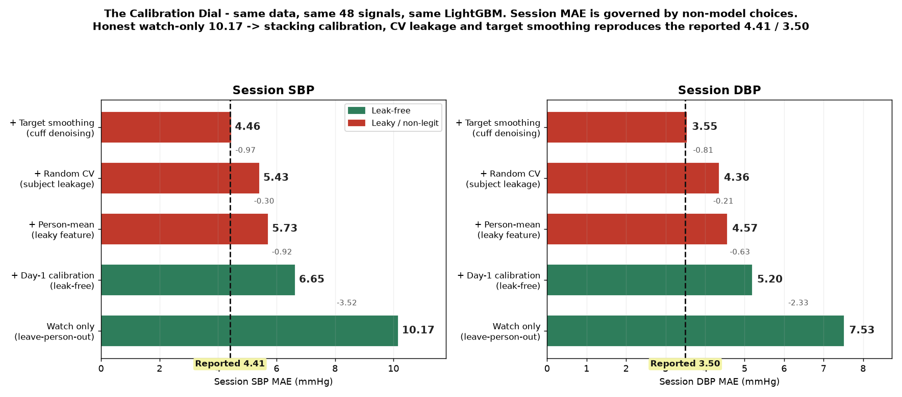
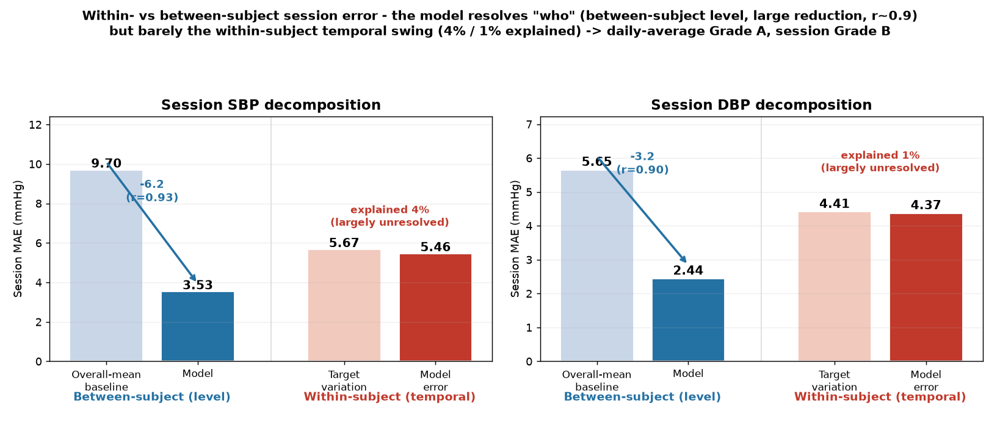
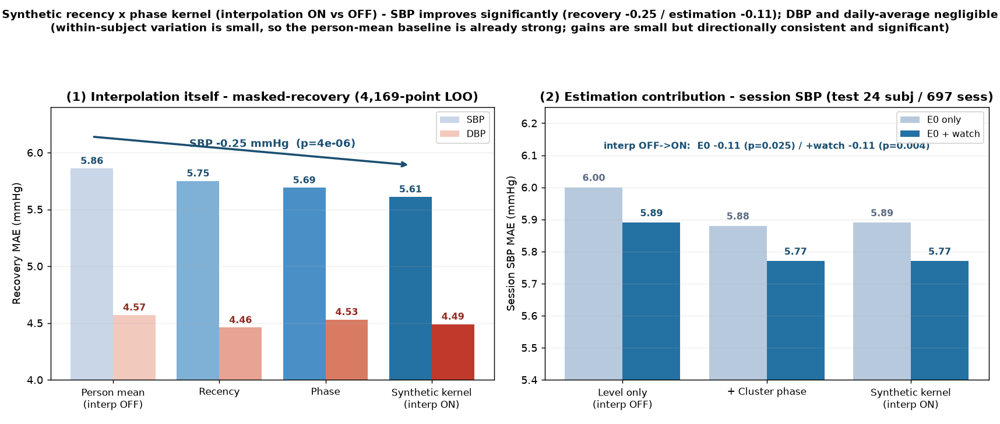
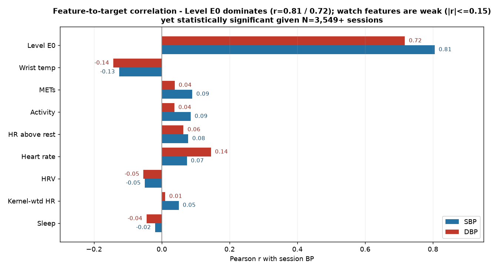

Background. Wrist-worn wearables increasingly report striking blood-pressure (BP) accuracy, yet a single headline mean absolute error (MAE) folds together design choices unrelated to the estimator, making such figures hard to compare. Objective. Using one dataset that underlies both a commercially reported model and this analysis, we quantify how much of reported accuracy is set by three disclosed-or-undisclosed choices—calibration (how much real reference BP is injected), cross-validation (CV) grouping, and target definition—rather than by model skill. Methods. On 120 Korean adults (~7 days each, ~4,169 cuff-paired sessions, 48 wearable features), we held the data and a LightGBM estimator fixed and swept a six-rung "accuracy dial," complemented by a within/between-subject decomposition, a model-family comparison, a leakage taxonomy, and masked-recovery interpolation, all under subject-wise CV. Results. Session SBP MAE descended monotonically from an honest, calibration-free 10.17 mmHg to 4.46 mmHg (accuracy 96.02%), reproducing the verified commercial 4.41 mmHg (96.05%); the estimator family was immaterial (ridge ≈ LightGBM ≈ MTGBM ≈ 6.45 mmHg). The model resolved between-subject level (9.70→3.53 mmHg) but only 4% (SBP)/1% (DBP) of within-subject variation. Conclusion. The descent is governed by non-model choices; the deployable, leak-free frontier is SBP MAE ≈ 6.65 mmHg, with daily-average estimation at BHS Grade A. We recommend calibration protocol, CV grouping, and target definition be reported as first-class items.
Keywords: cuffless blood pressure; wearable sensors; data leakage; per-subject calibration; cross-validation; reporting standards
Continuous, cuffless estimation of blood pressure (BP) from wrist-worn wearables is among the most sought-after goals in digital health, promising to move a measurement confined today to episodic clinic or home-cuff readings into the stream of everyday life, where it could support hypertension screening, titration, and self-management. Most wrist and finger cuffless methods derive BP from the photoplethysmography (PPG) waveform and from pulse transit or arrival time, exploiting the dependence of pulse-wave velocity on arterial stiffness and distending pressure (Mukkamala et al., 2015; Mukkamala et al., 2022). A parallel, less waveform-centric strategy—the one examined here—instead summarizes many low-rate wearable signals (heart rate, heart-rate variability, blood oxygen, activity, wrist temperature, sleep) into tabular features and regresses them onto reference cuff BP. Across both families the appeal is identical: a device already on the wrist, and a reading that requires no inflation and no user effort.
Reported accuracies for such systems are often striking. Pooled meta-analysis of PPG-based devices places mean SBP and DBP differences near 3.4 and 1.2 mmHg, respectively (Islam et al., 2022), and commercial products increasingly advertise headline figures such as "96% accuracy" or mean absolute error (MAE) around 4 mmHg. The data motivating the present study are no exception: a third-party-verified report on a wrist product reached a session-level SBP MAE of 4.41 mmHg (96.05%) and a DBP MAE of 3.50 mmHg (95.24%). Yet such numbers are hard to compare and easy to over-read, because a single reported MAE silently folds together several choices that have little to do with the estimator itself: how much real reference BP is supplied to the model and when it was measured (calibration), whether cross-validation (CV) keeps each subject's records on one side of the split, and whether the prediction target is the raw cuff reading or a smoothed version of it. Independent benchmarking under rigorous, out-of-distribution controls finds that most machine-learning models still fail the AAMI/ISO 81060-2 accuracy limits of ≤5 mmHg mean error and ≤8 mmHg standard deviation (Stergiou et al., 2018) once these controls are enforced (Mathew et al., 2026), and the European Society of Hypertension does not presently recommend cuffless devices for diagnosis or management, on the grounds that existing validation evidence is insufficient (Stergiou et al., 2022).
The mechanisms by which undisclosed design choices inflate reported accuracy are, individually, well documented. Record-wise (random) CV that places a subject's repeated measurements in both the training and test sets produces "identity confounding" and optimistic error estimates that collapse under subject-wise evaluation (Saeb et al., 2017; Little et al., 2017); per-subject calibration can lift new-subject performance dramatically, with a single calibration measurement raising classification accuracy from 56.8% to above 97% in one study (Mahdi et al., 2022); and PPG→BP pipelines in particular are prone to data leakage, unrealistic calibration, and label over-constraining (Mehta et al., 2024). More broadly, leakage is a systematic driver of irreproducibility across scientific machine learning, often erasing apparent model superiority once corrected (Kapoor & Narayanan, 2023), which is why contemporary reporting standards ask authors to disclose the split unit, the calibration protocol, and preprocessing as first-class items (Luo et al., 2016; Collins et al., 2024). What is missing is a demonstration that ties these threads to a single number: no study has taken one commercial-grade result and shown, on identical data with a fixed estimator, how much of the headline accuracy is attributable to each design choice rather than to model skill.
This paper provides that demonstration. It is a collaborative, transparent self-assessment by the team that built the commercial model together with the researchers evaluating it, using the same 120-subject wrist dataset (approximately 4,169 cuff-paired sessions) throughout. We make four contributions. First (C1), we construct an "accuracy dial": holding the data and the estimator fixed, we reproduce the reported 4.41/3.50 mmHg from an honest, deployable, calibration-free starting point of 10.17/7.53 mmHg (SBP/DBP) by introducing, one at a time, calibration, record-wise CV, and target smoothing—arriving at 4.46/3.55 mmHg and showing that the entire descent is governed by non-model choices. Second (C2), a within- versus between-subject decomposition shows that aggregate watch signals resolve between-subject BP level well but explain only about 4% (SBP) and 1% (DBP) of within-subject, session-to-session variation, exposing an information limit of low-rate wearable features rather than of any particular model; consistent with this, the estimator family proves immaterial, with ridge regression, gradient boosting, and tree-sharing multi-task boosting coinciding. Third (C3), we give a leakage taxonomy for time-point BP estimation and surface a subtlety that is easy to miss: subject-wise CV protects the model but does not protect a feature computed from the test subject's own prediction-period data, so both the split and the features must be controlled. Fourth (C4), we report a deployable, leak-free frontier—one-time day-1 cuff calibration, strict subject-wise CV, and raw targets—at roughly 6.65/5.20 mmHg at the session level, with daily-average error already reaching British Hypertension Society Grade A (O'Brien et al., 1990).
We emphasize that the high commercial figure is not an error but a legitimate point on a continuum fixed by disclosed choices; our contribution is to make that continuum explicit and reproducible. Two implications follow. For reporting, a headline MAE or accuracy percentage is not comparable across studies unless the calibration protocol (which reference BP is an input, and when it was measured), the CV grouping, and the target definition are disclosed alongside it. For research, the information limit identified here motivates a move beyond aggregate signals toward beat-level inputs—raw PPG and pulse-transit-time features (Mukkamala et al., 2015)—that could genuinely resolve within-subject variation, and the same transparent methodology extends naturally to the team's next target, muscle-strength and functional-longevity estimation. The remainder of this paper develops the dial, the decomposition, the leakage taxonomy, and the leak-free frontier in turn.
Cuffless blood pressure (BP) estimation from peripheral optical and timing signals has matured from a physiological proof of concept into a crowded device landscape. Most wrist- and finger-based systems derive BP from pulse transit time (PTT), pulse arrival time, or pulse-wave-analysis (PWA) features, whose theoretical basis and realistic accuracy ceilings were established in the foundational PTT review of Mukkamala et al. (2015) and the subsequent taxonomy of calibrated versus uncalibrated approaches by Mukkamala et al. (2022). At the pooled level, reported accuracy can appear clinically adequate: the systematic review and meta-analysis of Islam et al. (2022), spanning 16 studies and 15 devices (974 participants, ~81% photoplethysmography [PPG]-based), estimated a mean systolic difference of 3.42 mmHg (95% CI −2.17 to 9.01) and a diastolic difference of 1.16 mmHg (−1.26 to 3.58); yet only 8 of the devices reached a bias below 5 mmHg, and the confidence intervals were wide. Independent benchmarking reinforces this gap between headline and generalizable performance: under rigorous, out-of-distribution controls, most machine-learning (ML) models fail the AAMI/ISO 81060-2 error limits, with the strongest reported configuration ("MInception" plus demographics) reaching a mean absolute error (MAE) of 4.75 mmHg systolic and 2.90 mmHg diastolic (Mathew et al., 2026). Analyses of PPG waveform morphology—pulse width, dicrotic-notch timing, and reflection index as surrogates for arterial stiffness—help explain why the mapping is physiologically plausible but feature-sensitive (Charlton et al.).
Across this literature, the dominant determinant of accuracy appears to be not the estimator family but per-subject calibration. Because the optical-to-pressure mapping depends on individual arterial stiffness, compliance, and age, a single cuff calibration point can substantially alter performance: Mahdi et al. (2022) reported that one calibration measurement raised new-subject hypertension-risk classification from 56.8% to more than 97%, with accuracy still exceeding 83% days afterward. Concerns that such calibration decays within minutes appear to be overstated—controlled studies report calibration parameters remaining within ISO 81060-2 limits for roughly three months (Schlesinger et al., 2020), and the CSEM group has extended that stability window to approximately four months—but commercial smartwatches behave more conservatively. Real-world Samsung Galaxy Watch data analyzed by Lee et al. (2024) show measurable pre/post-calibration differences, reduced stability during daytime and motion, and a mandated recalibration every 28 days, while calibration-free PPG estimation has been argued to be fundamentally limited by peripheral vasomotion. The practical implication is that reported accuracy is conditional on how recently, and how much, reference BP has been injected into the pipeline.
Validation standards have co-evolved toward precisely this concern. Device-specific protocols such as the British Hypertension Society (BHS) A–D grading, which requires the cumulative proportion of absolute errors within 5/10/15 mmHg to reach 60/85/95% for Grade A (O'Brien et al., 1990/1993), together with the historical AAMI/ANSI SP10 criterion, were consolidated into a unified AAMI/ESH/ISO standard specifying a mean error ≤5 mmHg and a standard deviation ≤8 mmHg (Stergiou et al., 2018; ISO 81060-2, 2018). For wearable, cuffless devices specifically, IEEE Std 1708 (2014, revised 2025) provides dedicated objective-performance criteria, and the ESH Working Group added cuffless-specific tests covering static, positional, treatment-induced, awake/asleep, exercise, and recalibration conditions, concluding that cuff-based protocols alone are insufficient and that cuffless devices are not yet recommended for hypertension diagnosis or management (Stergiou et al., 2022). A headline MAE or MAPE reported without reference to these criteria is therefore difficult to interpret, and still harder to compare across studies.
A parallel body of work in ML methodology explains how such headline figures become inflated. The most consequential and frequently undisclosed choice is the unit of the train/test split. Saeb et al. (2017) demonstrated that record-wise (random) cross-validation (CV) can dramatically overestimate accuracy relative to subject-wise CV through "identity confounding," whereby repeated records from the same individual fall in both folds and the model learns to recognize the person rather than the physiological state; the companion analysis of Little et al. (2017) clarifies when each split unit is appropriate for the intended use case. These effects recur across physiological-signal domains—from longitudinal brain MRI to psychiatric diagnostic systems—where only subject-independent splitting yields honest estimates. For PPG-to-BP pipelines in particular, Mehta et al. (2024) catalogued four recurring pitfalls (same-patient leakage, over-constraining the label range, unrealistic calibration, and unrealistic preprocessing) and reported a high multi-valued-mapping factor (33.2%) alongside low mutual information (9.8%) between PPG and BP, underscoring how little headroom exists before design-induced optimism is mistaken for signal.
These are not isolated lapses. Kapoor and Narayanan (2023), surveying 17 scientific fields and 294 affected papers, framed data leakage as a systematic driver of irreproducibility, proposed an eight-type leakage taxonomy and "model info sheets," and documented cases in which an ML method's apparent superiority over classical statistics vanished once leakage was corrected. The reporting response has been to mandate disclosure of exactly the choices that move the number: the TRIPOD statement (Collins et al., 2015) and its ML-oriented successor TRIPOD+AI (Collins et al., 2024), the Delphi-based ML reporting guidelines of Luo et al. (2016), and, for this application, recent recommendations for evaluating PPG-based BP algorithms (Elgendi et al., 2024) all require authors to pre-specify the split unit, fit all transforms inside training folds only, and report realistic subject-independent error.
Taken together, the accuracy, calibration, and methodology literatures converge on a message that has not yet been made quantitative on a single, common dataset: reported wearable-BP accuracy is governed less by the estimator than by three design choices that may or may not be disclosed—how much real reference BP is injected through calibration, whether cross-validation separates subjects, and how the prediction target is defined. The present study, a transparent self-assessment by the developers of a commercially reported wrist-BP model (DayBP v1.0; third-party-verified session systolic MAE 4.41 mmHg, 96.05% accuracy), holds the data, feature set, and estimator fixed while moving each of these choices in turn, showing how they alone can account for the descent from an honest, deployable watch-only error near 10 mmHg to the sub-5 mmHg range typical of commercial reports. We frame this continuum as a "calibration dial," establish the honest subject-wise baseline, and argue that the calibration protocol, the CV grouping, and the target definition should be reported as first-class, comparable items alongside any headline accuracy figure.
Analyses were performed on a single multimodal wearable dataset comprising 120 Korean adults (midlife-skewed age distribution) monitored for approximately seven consecutive days each. A wrist-worn device recorded 24 physiological and behavioral signals: heart rate, resting heart rate, heart-rate variability, walking heart rate, blood oxygen saturation (SpO₂), respiratory rate, resting and active energy expenditure, combined walking-and-running distance, step count, absolute exertion (METs), stand time, walking steadiness, wrist temperature, sleep, flights climbed, step length, walking speed, double-support time, stair-ascent speed, walking asymmetry, and daylight-exposure time. Each signal was summarized within every session by two aggregation operators—a last-value-in-window statistic and a kernel-weighted statistic—yielding 48 model features. Reference blood pressure (BP) was obtained with an oscillometric upper-arm cuff (OMRON HEM-7156) at roughly 10 readings per day, producing approximately 4,169 sessions that pair watch-derived features with cuff systolic (SBP) and diastolic (DBP) values in mmHg. A baseline survey (age, sex, body-mass index, clinical history) and an external population anchor from the Korea National Health and Nutrition Examination Survey (KNHANES) were additionally incorporated.
The same dataset underlies the third-party-verified commercial report for the product DayBP v1.0 (Telecommunications Technology Association report TTA-26-01280, 2026-08), which reported session SBP MAE 4.41 mmHg (accuracy 96.05%), DBP MAE 3.50 mmHg (95.24%), and mean-arterial-pressure MAE 3.29 mmHg (96.19%) using a LightGBM model, subject-level cross-validation, and "reference BP" among its 36 input features (n = 3,873 for SBP, 3,861 for DBP). We treat this report throughout as one disclosed operating point rather than as an external comparator. Because the cuff reference is itself an intermittent oscillometric standard, accuracy benchmarks are interpreted against the AAMI/ESH/ISO consensus limits for automated sphygmomanometry (mean error ≤5 mmHg, SD ≤8 mmHg) (Stergiou et al., 2018; ISO 81060-2:2018) and the wearable-specific objective-performance framework of IEEE Std 1708 (2014/2025).
We constructed a transparent estimator that separates between-subject level, circadian phase, and residual signal-driven deviation, so that each component's contribution—and its calibration requirement—is explicit. The predicted session BP is E0 + r̂, where E0 is a reference-anchored baseline estimate and r̂ is a watch-feature residual. The baseline is the sum of a per-subject level term L and a circadian Phase term. The level is a James–Stein-style shrinkage of the subject's day-1 cuff mean toward the KNHANES population anchor,
$$L = \frac{n \cdot c_m + 2 \cdot L_{\text{ext}}}{n + 2},$$
where $c_m$ is the mean of the subject's day-1 cuff readings, $n$ is the number of those readings, and $L_{\text{ext}}$ is the external KNHANES anchor; the pseudo-count of 2 pulls subjects with few early readings toward the population mean while letting well-sampled subjects dominate their own level. This design follows the established principle that per-subject calibration is the dominant lever on cuffless-BP accuracy (Mukkamala et al., 2022; Mahdi et al., 2022), while using a population prior to stabilize sparsely observed individuals.
The Phase term is a cluster-level circadian curve, estimated within age-by-sex strata, plus the subject's own day-1 phase deviation recovered through a synthetic recency × phase kernel. For a target time $t$ at time-of-day phase $\phi$ and an observed reading at $(t', \phi')$, the kernel weight is
$$w(t,t') = \exp\!\left(-\frac{|\Delta t|}{\tau}\right)\cdot \exp\!\left(-\frac{\mathrm{circ}(\phi,\phi')^2}{2\ell^2}\right),$$
where $\Delta t = t - t'$ is the recency gap, $\mathrm{circ}(\phi,\phi')$ is the circular (wrap-around 24 h) distance between phases, $\tau$ is the recency length-scale, and $\ell$ is the phase length-scale. The recovered deviation is blended into E0 by a confidence weight
$$\alpha = \frac{\sum w}{\sum w + \kappa},$$
so that subjects with denser, more recent, phase-matched readings receive more of their individual circadian adjustment and sparse subjects revert to the cluster curve. The residual $r = \text{actual} - E0$ is then modeled from the 48 watch features; the champion residual estimator is ridge regression, chosen for parsimony after the model-family comparison described in the Results. The same synthetic kernel is used for minute-level interpolation of the BP trajectory, validated by masked-recovery leave-one-out (recovering each held-out session from the subject's other real cuff points).
To isolate how reported accuracy depends on non-model design choices rather than on the estimator, we evaluated a monotone ladder of six configurations on identical data, holding the base estimator fixed as a LightGBM on the 48 features except where target smoothing is noted. Each rung adds exactly one design choice to the one above it. (a) A watch-only model under leave-person-out cross-validation predicting the raw cuff target—the honest, deployable configuration with no BP calibration. (b) Addition of a legitimate one-time day-1 calibration, i.e., a baseline cuff measurement taken before the prediction window and genuinely available at deployment. (c) Replacement of the day-1 baseline with a person-mean calibration feature computed from the subject's full-period cuff readings, including the prediction period itself. (d) Substitution of random K-fold cross-validation for subject-wise splitting, so that readings from the same person appear in both training and test folds. (e) Addition of mild kernel denoising of the cuff target (phase length-scale $\ell = 42$ min, recency length-scale $\tau = 900$ min), which reproduces the commercial operating point. (f) Heavy target smoothing as an extreme illustration. The ladder is presented as a reporting device: each rung is a defensible analytic decision, and the purpose is to attribute the descent in reported error to specific, disclosable choices rather than to any claim of superior modeling.
We classify each calibration or evaluation choice into three categories by whether the information it injects is available at deployment, extending the data-leakage framework of recent ML-reproducibility work (Kapoor & Narayanan, 2023; Mehta et al., 2024). Leak-free: a one-time baseline measured before the prediction window (our day-1 calibration), which reflects what a user could genuinely supply once at setup. Borderline: a recent same-day cuff reading, which improves accuracy but presumes re-measurement during use. Leaky: any feature computed from the subject's own prediction-period readings—most importantly a person-mean that includes the target session—and/or random cross-validation that places the same subject in both training and test sets, exploiting identity confounding (Saeb et al., 2017; Little et al., 2017). A central methodological point follows from separating these two axes: subject-wise cross-validation protects the model from identity confounding but does not protect a feature that is itself computed from the test subject's own data. Both the split unit and the provenance of every feature must therefore be controlled, and transforms and calibration statistics fit inside training folds only (Mehta et al., 2024; Collins et al., 2024). This distinction has practical consequences because within-subject BP is not static: in our data the within-subject SBP standard deviation had a median of 7.3 mmHg (range 3.5–11.0 mmHg), and some subjects drifted by up to ±2.6 mmHg/day. A once-measured day-1 calibration therefore decays over the monitoring week—consistent with reports of gradual calibration drift in wearable BP (Lee et al., 2024)—whereas a leaky person-mean silently tracks the subject's current level and masks that decay.
All honest configurations were evaluated under subject-wise cross-validation (leave-person-out / GroupKFold), which we regard as the only split consistent with the deployment use-case of estimating BP for unseen individuals (Saeb et al., 2017; Little et al., 2017; Luo et al., 2016). We report three complementary accuracy metrics. First, mean absolute error (MAE, mmHg) at both the session level and the daily-average level, the latter averaging a subject's same-day sessions before scoring. Second, British Hypertension Society (BHS) letter grading, defined as the cumulative percentage of absolute errors falling within 5, 10, and 15 mmHg, with Grade A requiring 60/85/95%, Grade B 50/75/90%, and Grade C 40/65/85%, and a device required to reach at least Grade B for both SBP and DBP (O'Brien et al., 1990/1993). Third, MAPE-accuracy (defined as 100 − MAPE), reported only to permit direct comparison with the commercial report's percentage metric and not as a primary clinical criterion. Consistent with current reporting guidance for prediction models and for PPG-based BP algorithms specifically (Collins et al., 2024; Luo et al., 2016), we treat three items as first-class, mandatory disclosures accompanying any headline MAE or MAPE: the calibration protocol (which reference BP enters as an input, and when it was measured relative to the prediction window), the cross-validation grouping (subject-wise versus random), and the target definition (raw versus smoothed cuff values).
On the shared dataset (120 adults, ~7 days each, ~4,169 cuff-paired sessions), reported session-level accuracy was not a fixed property of the data or the estimator but a monotone function of three disclosed design choices: how much real reference BP is injected as calibration, whether cross-validation (CV) separates subjects, and how the target is defined. Holding the 48 watch-derived features and the LightGBM estimator constant, we swept these choices from the most conservative deployable configuration to the most permissive, producing a continuum of session mean absolute errors (MAE) from 10.17 mmHg down to 2.28 mmHg for systolic BP (SBP) (Table 1). We refer to this continuum as the "calibration dial."
Table 1. The accuracy dial on identical data. Each rung adds one design choice to the one above it; the estimator (LightGBM on 48 features) is fixed except where target smoothing is noted.
| Rung | Configuration | SBP MAE (mmHg) | DBP MAE (mmHg) | MAPE-accuracy (SBP / DBP) | Nature of the change |
|---|---|---|---|---|---|
| (a) | Watch-only, leave-person-out CV, raw cuff target | 10.17 | 7.53 | 90.9% / 89.7% | Honest, deployable, no calibration |
| (b) | + one-time day-1 cuff calibration (measured before the window) | 6.65 | 5.20 | — | Leak-free, deployable |
| (c) | + person-mean feature (subject's full-period mean, incl. prediction period) | 5.73 | 4.57 | — | Leaky feature |
| (d) | + random K-fold CV instead of subject-wise | 5.43 | 4.36 | — | Subject leakage via split |
| (e) | + mild target smoothing (kernel denoising; ℓ = 42 min, τ = 900 min) | 4.46 | 3.55 | 96.02% / 95.18% | Target redefinition |
| (f) | Heavy target smoothing (extreme) | 2.28 | 1.74 | — | Target redefinition (extreme) |
The practical significance of rung (e) is that it essentially reproduces the independently verified commercial report on this same data (session SBP MAE 4.41 mmHg, accuracy 96.05%; DBP MAE 3.50 mmHg, accuracy 95.24%): our reconstruction reached 4.46 mmHg / 96.02% (SBP) and 3.55 mmHg / 95.18% (DBP). The agreement to within ~0.05 mmHg indicates that the headline figure is faithfully recoverable once the three design choices are matched, and is therefore a legitimate point on the continuum rather than an anomaly. Critically, the entire descent from the honest watch-only baseline of 10.17 mmHg to 4.46 mmHg is attributable to the three non-model choices—real-BP injection, CV grouping, and target definition—each of which is individually well documented as an accuracy-inflating degree of freedom in physiological-signal machine learning (Saeb et al., 2017; Mehta et al., 2024; Kapoor & Narayanan, 2023). The estimator itself contributes almost nothing to the gain (Section 4.3).

Figure 1 (hero). The calibration dial. A single horizontal axis of session SBP MAE (mmHg), descending left to right, with the six configurations (a)–(f) marked as labeled stops. The leftmost stop (a), at 10.17 mmHg, is annotated "honest / deployable / no calibration"; successive stops are color-coded by the type of design change they add (calibration = blue, CV grouping = amber, target definition = red). Stop (e), at 4.46 mmHg, carries a callout aligning it with the externally verified commercial value of 4.41 mmHg, and the band from (e) to (f) is shaded to mark the region reached only by progressively redefining the target. A side panel decomposes the total 5.71-mmHg movement from (a) to (e) into its non-model components, visually conveying that the dial, not the model, sets the headline number.
To locate where the champion estimator actually adds value, we decomposed out-of-fold error into a between-subject (level) component and a within-subject (temporal-deviation) component. Between subjects, the model substantially improved on a naive overall-mean baseline, reducing SBP MAE from 9.70 to 3.53 mmHg (Spearman rank correlation r = 0.93 between predicted and true subject means) and DBP MAE from 5.65 to 2.44 mmHg (r = 0.90). Within subjects, however, the model explained only 4% of SBP and 1% of DBP session-to-session variation. Consequently, daily-average predictions reached British Hypertension Society (BHS) Grade A (SBP MAE 2.40 mmHg, DBP MAE 2.28 mmHg), whereas session-level predictions reached only Grade B (O'Brien et al., 1990/1993). This pattern indicates that aggregate, low-rate watch signals carry ample information to rank individuals by their typical BP level but little information to resolve a given subject's within-day fluctuations—consistent with the low mutual information reported for PPG→BP mappings under rigorous controls (Mehta et al., 2024).

Figure 2. Within- versus between-subject decomposition. Two paired bars contrast the between-subject level task with the within-subject temporal task. On the left, the naive overall-mean baseline (SBP 9.70 mmHg) drops to the model's level estimate (3.53 mmHg; Spearman r = 0.93), with the DBP pair (5.65 → 2.44 mmHg; r = 0.90) shown beneath. On the right, a variance-explained gauge shows the model resolving only 4% (SBP) and 1% (DBP) of within-subject session-to-session variation. An inset marks that aggregating to the daily average attains BHS Grade A (SBP 2.40 / DBP 2.28 mmHg) while the session level attains Grade B, illustrating that the gain lives in between-subject level, not within-subject dynamics.
The choice of estimator was largely immaterial. On the watch residual (actual minus the layered baseline E0), ridge regression, a single LightGBM model, and a tree-sharing multi-task gradient-boosting machine (MTGBM) all converged to a session SBP MAE of approximately 6.45 mmHg. Because a linear model, a single gradient-boosted ensemble, and a multi-task ensemble were statistically indistinguishable on this residual, the estimator family cannot be regarded as the operative accuracy lever; the dial of Table 1 is.
We next tested whether the synthetic recency × phase kernel improves recovery of unobserved BP points relative to a simple person-mean. In a masked-recovery leave-one-out protocol (4,169 masked sessions, each recovered from the subject's other real cuff readings), the kernel reduced SBP MAE from 5.86 to 5.61 mmHg (Δ = −0.25 mmHg; paired Wilcoxon p = 4 × 10⁻⁶) and DBP MAE from 4.57 to 4.49 mmHg (p = 0.07). The systolic improvement was small but statistically significant; the diastolic improvement did not reach significance. We report this as a modest, honestly bounded gain from temporal interpolation rather than as a transformative effect.

Figure 3. Interpolation masked-recovery. A paired-comparison plot over 4,169 masked sessions showing, for each target, the recovered BP from the subject's other real cuff points under two methods: the person-mean (SBP 5.86 mmHg) and the synthetic recency × phase kernel (5.61 mmHg; Δ = −0.25 mmHg, paired Wilcoxon p = 4 × 10⁻⁶). The DBP pair (4.57 → 4.49 mmHg; p = 0.07) is shown alongside. Significance annotations make explicit that the systolic gain is small but reliable and the diastolic gain is not statistically significant.
The near-linearity of the between-subject result was mirrored at the feature level. Across all evaluable sessions (n ≥ 3,549), the layered level estimate E0 correlated strongly and approximately linearly with session BP (Pearson r = 0.81 for SBP, 0.72 for DBP), whereas individual watch-derived features correlated only weakly (|r| ≤ 0.15; e.g., wrist temperature r = −0.13, heart rate r = +0.15 for DBP). These feature correlations, while statistically significant given the sample size, are small in magnitude, reinforcing that the recoverable signal resides predominantly in the calibration-anchored level rather than in instantaneous wrist physiology—in line with the long-standing view that cuffless BP estimation is strongly subject-specific and calibration-dependent (Mukkamala et al., 2022; Mahdi et al., 2022).

Figure 4. Feature ↔ target scatter. A two-panel scatter over all evaluable sessions (n ≥ 3,549). The left panel plots the layered level estimate E0 against session cuff BP, with a near-diagonal fit line (Pearson r = 0.81 SBP, 0.72 DBP). The right panel plots two representative individual watch features—wrist temperature (r = −0.13) and heart rate (r = +0.15 for DBP)—against session BP, showing flat clouds (all |r| ≤ 0.15). The contrast visualizes that the recoverable signal sits in the calibration-anchored level, not in instantaneous wrist physiology.
Finally, we organized the calibration-related degrees of freedom into a three-tier leakage taxonomy, framed for deployment realism. Tier (i), leak-free, is a one-time baseline measured before the prediction window (day-1 cuff), genuinely available at deployment; this underlies rung (b). Tier (ii), borderline, is a recent same-day cuff reading that requires re-measurement during use. Tier (iii), leaky, comprises any feature computed from the subject's own prediction-period readings (e.g., the full-period person-mean, rung c) and/or random CV that places the same subject in both train and test (rung d). The central methodological point is that these two failure modes are independent: subject-wise CV protects the model from identity confounding (Saeb et al., 2017; Little et al., 2017) but does not protect a feature computed from the test subject's own data—both the split and the feature construction must be controlled, a compound pitfall catalogued across ML-based science (Kapoor & Narayanan, 2023; Mehta et al., 2024). This distinction is consequential because within-subject BP is not static: the within-subject SBP standard deviation among test subjects had a median of 7.3 mmHg (range 3.5–11.0 mmHg), with some subjects drifting by up to ±2.6 mmHg per day. A leak-free day-1 calibration therefore decays over the week, whereas a leaky person-mean silently tracks the current level and absorbs this drift—producing an apparent accuracy gain that would not survive deployment. Accordingly, we take the deployable frontier on these data to be the leak-free, subject-wise, raw-target configuration of rung (b): honest session SBP ≈ 6.65 mmHg (DBP ≈ 5.20 mmHg), with daily-average predictions already at Grade A, and watch-only estimation (no calibration) at approximately 10 mmHg.
The central finding of this study is methodological rather than algorithmic: on a single dataset, the reported accuracy of watch-based blood pressure (BP) estimation behaves as a point on a continuum whose position is set almost entirely by three disclosed-or-undisclosed design choices—how much real reference BP is injected through calibration, whether cross-validation (CV) separates subjects, and how the prediction target is defined—rather than by the skill of the estimator. Holding the 48 aggregate watch features fixed, session-level SBP mean absolute error (MAE) descends monotonically from an honest, deployable, watch-only value of 10.17 mmHg to 4.46 mmHg (accuracy 96.02%) as, in turn, a person-mean calibration feature, random K-fold CV, and mild target smoothing are introduced. The final figure closely reproduces the independently verified commercial report on the same data (4.41 mmHg, 96.05%; TTA-26-01280). That the estimator is not the lever is confirmed directly: on the watch residual, ridge regression, a single gradient-boosted tree ensemble, and a tree-sharing multi-task ensemble (MTGBM) are statistically indistinguishable (session SBP MAE ≈ 6.45 mmHg). This is consistent with the broader expectation that the PPG/wearable→BP mapping is dominated by subject-specific physiology and calibration rather than model family (Mukkamala et al., 2022; Mehta et al., 2024), and with evidence that aggregate benchmark gains frequently reflect evaluation protocol rather than genuine predictive signal (Kapoor & Narayanan, 2023).
The practically important question is therefore not the smallest achievable number but the best honest number obtainable under a deployable protocol. With a single, leak-free day-1 cuff calibration—a baseline measured before the prediction window and genuinely available at deployment—strict subject-wise CV, and raw (unsmoothed) cuff targets, session-level accuracy is SBP MAE 6.65 mmHg and DBP 5.20 mmHg, while the daily-average estimate already attains British Hypertension Society (BHS) Grade A (SBP 2.40 mmHg, DBP 2.28 mmHg; O'Brien et al., 1990/1993). Watch-only estimation without any calibration remains near 10 mmHg. This frontier is coherent with the calibration literature, in which a single per-subject calibration point lifts performance into clinically useful ranges (Mahdi et al., 2022) and calibration parameters remain within ISO 81060-2 limits for several months (Schlesinger et al., 2020), even as commercial smartwatches still mandate periodic recalibration (Lee et al., 2024). We note, however, that within-subject BP in this cohort drifts and swings over the week (within-subject SBP standard deviation median 7.3 mmHg, range 3.5–11.0 mmHg; some subjects drifting up to ±2.6 mmHg/day), so a one-time day-1 calibration decays across a monitoring week—whereas a feature computed from the subject's own prediction-period readings silently tracks the current level and thereby inflates apparent accuracy.
This last distinction motivates our strongest reporting recommendation. Subject-wise (leave-person-out) CV is necessary to avoid the identity-confounding inflation that record-wise splitting produces in physiological-signal machine learning (Saeb et al., 2017; Little et al., 2017), but it is not sufficient: a subject-wise split protects the model from seeing the test person in training, yet it does nothing to protect a feature that is itself computed from the test subject's own prediction-period data. Both the split unit and the feature provenance must be controlled, a compound leakage pathway that split-level audits alone will miss (Mehta et al., 2024; Kapoor & Narayanan, 2023). We therefore argue that wearable-BP reports should disclose, as first-class items alongside the headline metric, (i) the calibration protocol—which reference BP values are inputs and when they were measured relative to the prediction window; (ii) the CV grouping—subject-wise versus random; and (iii) the target definition—raw versus smoothed. A single MAE or MAPE-based accuracy figure reported without these three is not comparable across studies. This position is aligned with prevailing predictive-model reporting standards (Collins et al., 2024; Luo et al., 2016) and with cuffless-specific validation guidance that current evidence remains insufficient for diagnostic use (Stergiou et al., 2022). We stress that the high commercial figure is a legitimate operating point under its disclosed choices, not an error; our aim is to make the continuum on which it sits explicit, reproducible, and comparable.
Several limitations qualify these results. First, the predictors are aggregate daily watch summaries (two window aggregations of 24 device signals), not beat-level waveforms; the pipeline has no access to raw photoplethysmography (PPG) or pulse-transit-time (PTT), the morphological and timing features that physically encode arterial stiffness and carry most of the instantaneous BP signal (Mukkamala et al., 2015). This is the most likely explanation for the within-/between-subject asymmetry we observe: the model resolves between-subject level well (Spearman rank r = 0.93 for SBP) but explains only about 4% of within-subject SBP variation and 1% for DBP, so aggregate signals carry little information to track session-to-session swings within a person. Second, the data derive from a single cohort of 120 Korean, midlife-skewed adults over roughly one week; generalization across age ranges, comorbidities, and longer horizons is untested, and external validity beyond the KNHANES population anchor should be treated as an open question. Third, the reference itself is oscillometric cuff measurement (OMRON HEM-7156, ~10 readings/day), which carries its own measurement noise; part of the irreducible session-level error reflects reference variability rather than estimator failure. Fourth, and relatedly, kernel-based target smoothing is a modeling choice, not ground truth: smoothing lowers the reported MAE by denoising the label, but the denoised target is not what a clinician measures, and mild-to-heavy smoothing (SBP MAE 4.46 down to 2.28 mmHg) should be read as a statement about label definition rather than about estimation accuracy.
Two lines of work follow directly. First, resolving the within-subject bottleneck will require beat-level signals—raw PPG and PTT/pulse-arrival features—rather than aggregate summaries, since these are the physiological channels through which within-subject BP change is expressed (Mukkamala et al., 2015; Mukkamala et al., 2022); the honest baseline and the "calibration dial" framework established here provide the reference against which any such gain must be demonstrated to be genuine rather than protocol-induced. Second, the same transparent methodology—explicit separation of leak-free calibration, subject-wise splitting, and raw targets—can be transferred to the team's next target, wearable estimation of muscle strength and functional longevity, where the same leakage pathways are likely to recur and the same reporting discipline will be needed.
On identical data, the gap between an honest watch-only error of ~10 mmHg and a headline of ~4.4 mmHg is accounted for entirely by calibration, CV grouping, and target definition—not by the estimator. The deployable, leak-free frontier is SBP MAE ≈ 6.65 mmHg with a single day-1 calibration, and daily-average estimation already reaches BHS Grade A. We therefore recommend that calibration protocol, CV grouping, and target definition be reported as first-class, mandatory items for any wearable-BP accuracy claim.
Charlton, P. H., et al. (2022). Assessing hemodynamics from the photoplethysmogram to gain insights into vascular age: A review from VascAgeNet. American Journal of Physiology-Heart and Circulatory Physiology, 322(4), H493–H522.
Collins, G. S., Moons, K. G. M., Dhiman, P., Riley, R. D., Beam, A. L., Van Calster, B., Ghassemi, M., et al. (2024). TRIPOD+AI statement: updated guidance for reporting clinical prediction models that use regression or machine-learning methods. BMJ, 385, e078378.
Collins, G. S., Reitsma, J. B., Altman, D. G., & Moons, K. G. M. (2015). Transparent Reporting of a multivariable prediction model for Individual Prognosis Or Diagnosis (TRIPOD). BMJ, 350, g7594. (Also Annals of Internal Medicine, 162(1), 55–63.)
Elgendi, M., Haugg, F., Fletcher, R. R., Allen, J., Shin, H., Alian, A., & Menon, C. (2024). Recommendations for evaluating photoplethysmography-based algorithms for blood pressure assessment. Communications Medicine, 4, 140. https://doi.org/10.1038/s43856-024-00555-2
IEEE Std 1708-2014 (revised as IEEE Std 1708-2025). IEEE Standard for Wearable, Cuffless Blood Pressure Measuring Devices. IEEE.
Islam, S. M. S., Chow, C. K., Daryabeygikhotbehsara, R., et al. (2022). Wearable cuffless blood pressure monitoring devices: a systematic review and meta-analysis. European Heart Journal – Digital Health, 3(2), 323–337.
ISO 81060-2:2018 (+Amd.1:2020). Non-invasive sphygmomanometers — Part 2: Clinical investigation of intermittent automated measurement type. International Organization for Standardization.
Kapoor, S., & Narayanan, A. (2023). Leakage and the reproducibility crisis in machine-learning-based science. Patterns, 4(9), 100804. (Preprint: arXiv:2207.07048, 2022.)
Lee, Youngro, Park, J., Park, S., Seo, J., & Lee, Hae-Young. (2024). Real-world analysis of pre/post-calibration blood-pressure differences in a smartwatch campaign. IEEE Open Journal of Engineering in Medicine and Biology (document 10490153).
Little, M. A., Varoquaux, G., Saeb, S., Lonini, L., Jayaraman, A., Mohr, D. C., & Kording, K. P. (2017). Using and understanding cross-validation strategies: Perspectives on Saeb et al. GigaScience, 6(5), gix020. https://doi.org/10.1093/gigascience/gix020
Luo, W., Phung, D., Tran, T., Gupta, S., Rana, S., Karmakar, C., et al. (2016). Guidelines for developing and reporting machine learning predictive models in biomedical research: a multidisciplinary view. JMIR, 18(12), e323.
Mahdi, A., Shabany, M., et al. (2022). Cuffless hypertension risk assessment and the significance of calibration. Computing in Cardiology (CinC 2022), paper 092.
Mathew, N., Shen, Y., Hu, R., Rahimi, M., & Zouridakis, G. (2026). Benchmarking and enhancing PPG-based cuffless blood pressure estimation methods. arXiv preprint arXiv:2602.04725.
Mehta, S., Kwatra, N., Jain, M., & McDuff, D. (2024). Examining the challenges of blood pressure estimation via photoplethysmogram. Scientific Reports, 14. DOI: 10.1038/s41598-024-68862-1.
Mukkamala, R., Hahn, J.-O., Inan, O. T., et al. (2015). Toward ubiquitous blood pressure monitoring via pulse transit time: theory and practice. IEEE Transactions on Biomedical Engineering, 62(8), 1879–1901.
Mukkamala, R., Stergiou, G. S., & Avolio, A. P. (2022). Cuffless blood pressure measurement. Annual Review of Biomedical Engineering, 24, 203–230.
O'Brien, E., Petrie, J., Littler, W. A., et al. (1990/1993). The British Hypertension Society protocol for the evaluation of automated and semi-automated blood pressure measuring devices (A–D grading). Journal of Hypertension.
Saeb, S., Lonini, L., Jayaraman, A., Mohr, D. C., & Kording, K. P. (2017). The need to approximate the use-case in clinical machine learning. GigaScience, 6(5), gix019.
Schlesinger, O., et al. (CSEM). (2020). PPG-based blood pressure monitoring by pulse wave analysis: calibration parameters are stable for three months.
Stergiou, G. S., Alpert, B., Mieke, S., et al. (2018). A universal standard for the validation of blood pressure measuring devices: AAMI/ESH/ISO Collaboration Statement. Journal of Hypertension, 36(3), 472–478.
Stergiou, G. S., Mukkamala, R., Avolio, A., et al. (2022). Cuffless blood pressure measuring devices: review and statement by the European Society of Hypertension Working Group on Blood Pressure Monitoring and Cardiovascular Variability. Journal of Hypertension, 40(8), 1449–1460.
This is a working draft generated for internal review (collaborative bridge study). Numbers are from the shared analysis on the same 120-subject dataset; references and affiliations marked “to confirm” are being finalized.